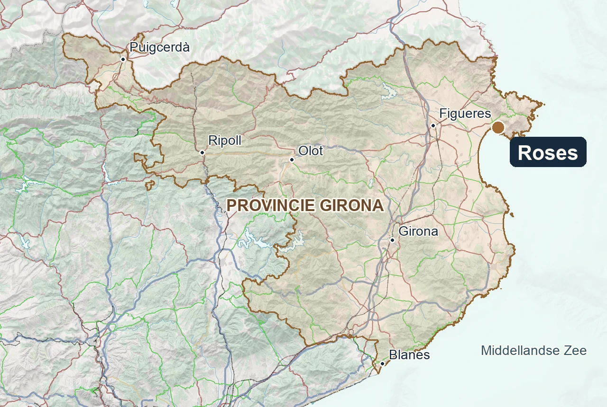

Wat wilt u renoveren?
Kies het soort werk en stel uw WhatsApp-bericht aan Manolo op.


Bouwen en renoveren in vier tijdperken
Scrol verder of kies ‘Voor’ en ‘Na’ om de veranderingen te bekijken.
Geïllustreerde voorbeelden van bouw- en renovatiewerk.
Geïllustreerde voorbeelden van bouw- en renovatiewerk.
Jaren 80
Loslatend pleisterwerk en verweerde luiken.


Jaren 90
Afbladderend pleisterwerk op de gevel en vocht onder het balkon.


Jaren 2000
Een vervallen veranda en beschadigde bestrating.

2026
Een villa in aanbouw met metselwerk op beide verdiepingen en de zee op de achtergrond.

Voorbeeldproject
Renovatie van een veranda
8 vakmensen
onder leiding van Manolo

Voorbeeld van een renovatie met illustratieve beelden.
De vernieuwde veranda en vloer
De overzichtsfoto toont de ingang, de veranda en de bestrating na afloop van het werk.
Wat u bij een renovatie vaak niet ziet
Deze drie plekken op een vochtige gevel laten zien waar water kan binnendringen en hoe het wegloopt.
Geïllustreerd voorbeeld van een gerenoveerde gevel.
De aansluiting rond het raam
We controleren de aansluiting tussen het kozijn en de muur, en de raamdorpel eronder. Die voert regenwater weg van de gevel.
Metselaar in Roses en de Alt Empordà
Manolo Rodríguez

Manolo bouwt, renoveert en repareert woningen in de Empordà. Bij het eerste bezoek bekijkt hij samen met u de woning en legt hij uit waar u het beste mee kunt beginnen. Hij stuurt het team aan en blijft uw aanspreekpunt tot de laatste controle.
- Jaar vakervaring
- 50+
- Vakmensen onder zijn leiding
- 8
Van het eerste bezoek tot de laatste controle
U heeft rechtstreeks contact met Manolo, die een team van 8 vakmensen aanstuurt.
-

We bekijken de woning
We bekijken wat er nodig is en bespreken wat u wilt veranderen.
-
We spreken het werk af
We leggen vast wat er moet gebeuren en in welke volgorde.
-
We controleren de afwerking
We lopen de afwerking samen met u na en beantwoorden uw laatste vragen.
Illustratieve beelden.
Vertel Manolo wat u nodig heeftVragen vooraf
Neemt u ook kleine klussen aan?
Ja. Vertel me wat u nodig heeft en waar de woning staat.
Wat kan ik het beste vertellen als ik u bel?
Vertel me in welke plaats de woning staat, wat u wilt renoveren of repareren en of er haast bij is. Foto’s kunt u ook via WhatsApp sturen.
Werkt u ook buiten Roses?
Ik werk in Roses en de Alt Empordà. Vertel me waar het project is, dan kijken we wat mogelijk is.
Werkgebied
Provincie Girona
Ik werk vanuit Roses. Laat weten in welke gemeente uw woning ligt, dan kan ik aangeven of ik daar kan langskomen.
Vraag of ik in uw gemeente werk
Laten we uw plannen bespreken.
Vertel me wat u wilt laten doen en waar de woning staat.

Stel uw bericht op
Voorbeeld van uw bericht
In WhatsApp kunt u details en foto’s toevoegen. Privacy